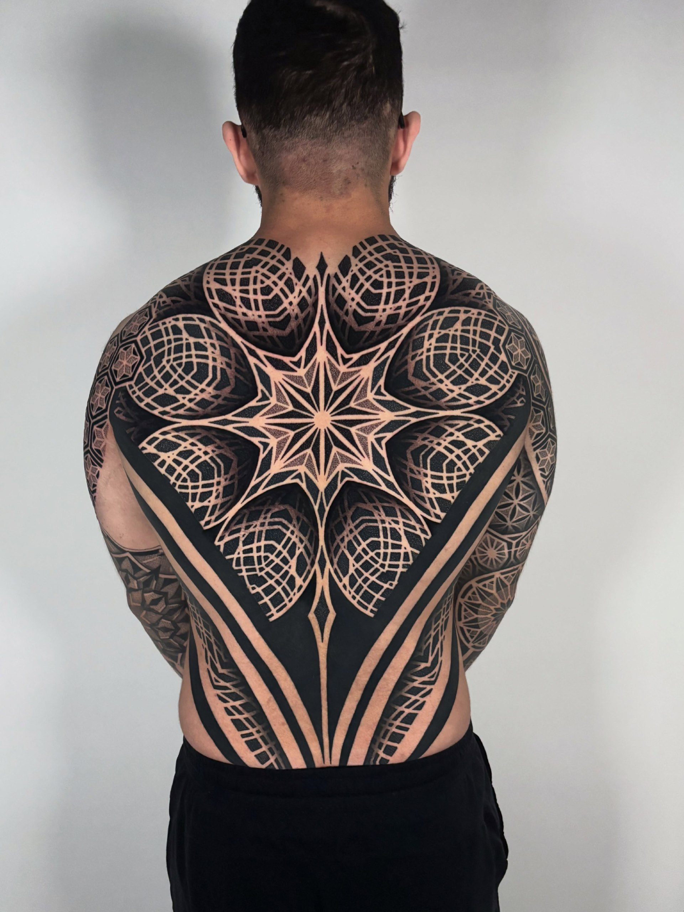
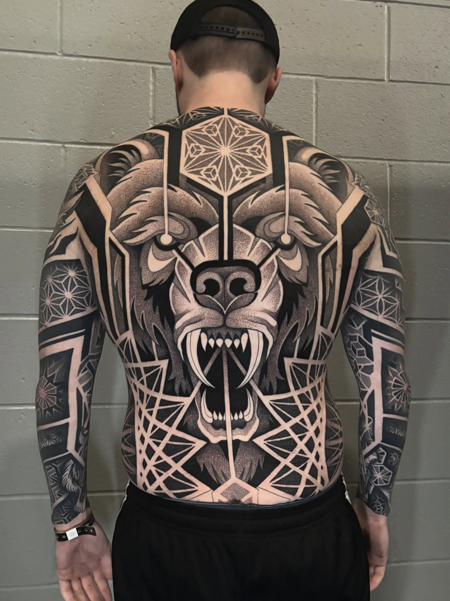
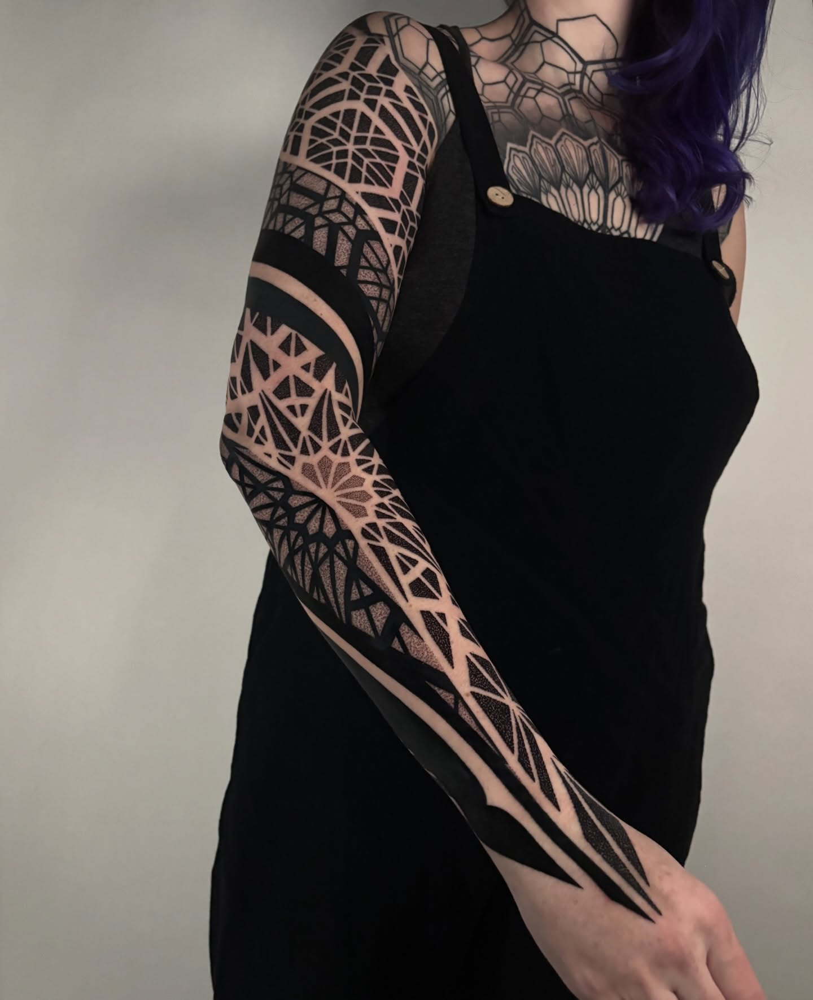
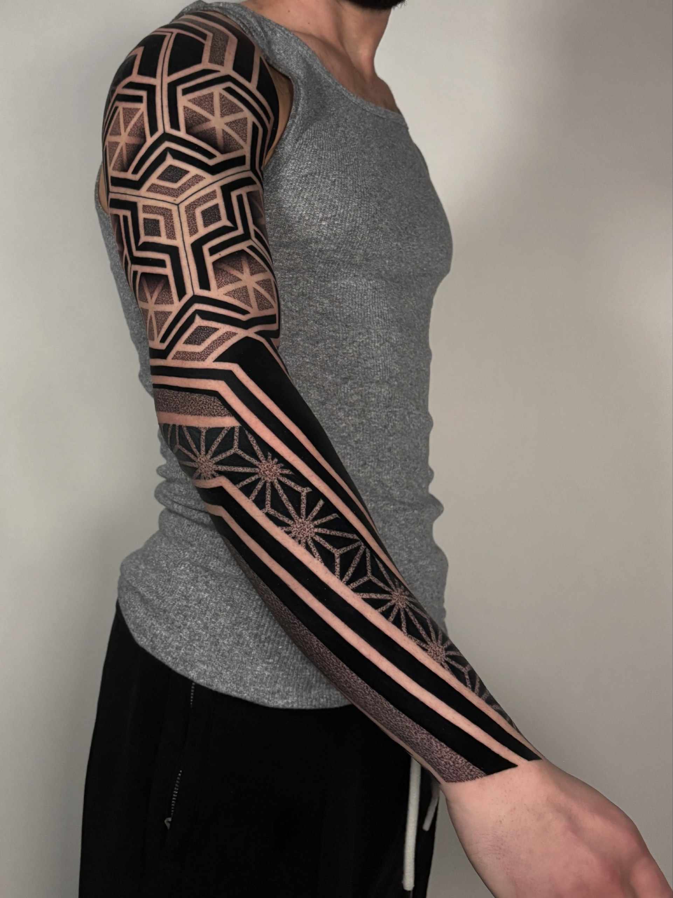
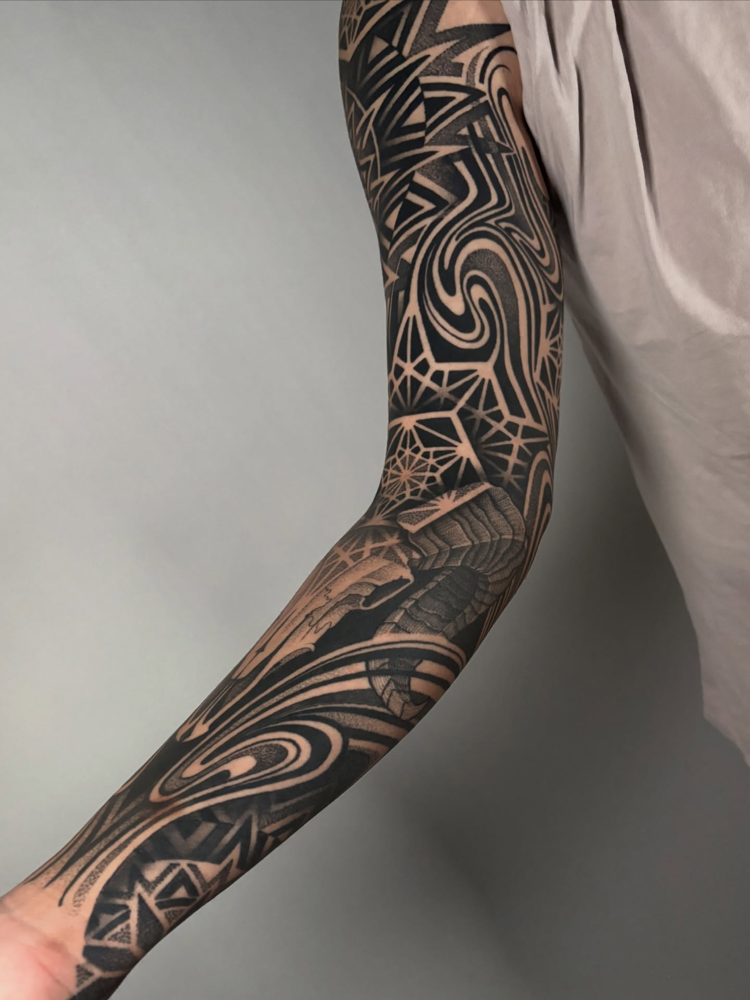

A long conversation with Mitch Koch
On fully committing to geometric tattooing, designing ten hours for every sleeve, winning at Middle of the Map, and the language of patterns on skin.
"Patterns and geometry is a language that everyone can speak, and I find a lot of joy in expressing myself through this language."
Q.01You've built a really distinct voice in geometric and dotwork tattooing. When did you first know that structured, pattern-based work was your lane, and what drew you to it over other styles?
First of all, thank you! There are so many talented artists in this genre now and I try hard to push the boundaries and come up with original concepts and ideas. I did my first geometric/dotwork piece about a year into my apprenticeship (around 2016) and have slowly sprinkled in more and more into my work over the years. In about 2020, I made the decision to fully commit to this style and stopped taking on projects that did not fit into this realm. At the time, this was very difficult for me to turn down other projects and disappoint potential clients. But I had a vision for my artwork and took a chance on myself and so far, I think it has worked out pretty good and has helped me to build my voice in the industry.
Q.02You won 1st place in BOTH Geometric/Mandala AND Sleeve categories at Middle of the Map Tattoo convention. What was that piece, and what went into preparing for a competition like that?
The pieces that I won these awards for are on one of my best and favorite clients, Nick. I started tattooing Nick in 2023 when we completed a full sleeve for his first tattoo. Shortly after that, we did his second sleeve and then his chest piece. Earlier this year, Nick and I started his backpiece with a large snarling bear design and finished it at the MOTM convention. While we were there, we were lucky enough to win these awards for his healed work. MOTM is a great convention with many talented artists so I am honored to win these awards here but even more honored to be trusted by clients like Nick to allow me to work on so much of their body. We have plans to start his legs soon so stay tuned to see more on Nick!
Q.03Your work spans large-scale projects, including dual sleeves, full back pieces, and half body suits. When you're mapping out a massive piece like that, how much is pre-drawn versus developed freehand on the body?
I am a huge prepper. Every design I do is fully rendered and designed onto photos of the clients' bodies before they come in. For a sleeve/leg sleeve, I have 4 very specific poses that I use to design the entire project from all angles. I believe this allows me to conceptualize the entire limb/body part as a whole and ensure the most cohesive and thought out piece. On average, I spend about 10 hours designing a sleeve before the client comes in. I do a good amount of freehand in my work to layout large flow lines throughout pieces as I have found these can be difficult to stencil. Every project is different though and requires a different proportion of stencil/freehand.

Although patterns are rigid, I believe they beautifully exemplify the subtle changes and curves in the human body and can be organized in a way to showcase these natural movements.
Q.04You own Sleepy Reaper Tattoo in Wisconsin. What was the journey that led you to open your own space, and what drove you to build a shop dedicated to this kind of work?
I have worked in Madison, WI for about 9 years now and spent about 6 years at another shop in town developing my work and voice. I opened Sleepy Reaper about 3 years ago because I wanted a space that I could shape into this voice. I hired my two good friends to open the shop with me, Will Spencer and Lincoln Rust. Since then, we have brought on a third artist, Nate Rodriguez, about a year ago. Realistically, I just wanted a space that I could feel comfortable at and work with my friends and it has been working out pretty good so far. We recently moved into a nice new location and have been enjoying the ride.
Q.05Beyond the technical side of tattooing, what keeps you inspired on a personal level? Do you have hobbies or interests outside the shop that influence how you see patterns, structure, and geometry in everyday life?
What keeps me the most inspired is my clients. I am honored to be trusted with these large life changes in people and feel a lot of satisfaction from completing a large project for them and helping them to feel more confident in their skin. I also enjoy traveling very much, often times for tattooing. I think traveling has helped to influence my artwork heavily both literally as I visit different guest spots and artists that I look up to but also helps to influence my perspective on the world and subsequently my art.
Q.06Who or what were your biggest early influences when you were first learning geometric tattooing, and how has your style evolved since those early days?
Some of the first artists that I remember being drawn to in this style were people like Dylan Sutton, Raimundo Ramirez, Nathan Mould, Melow Perez and many others. I remember being amazed and inspired by their large scale geometric and ornamental pieces from very early in my career. Another very important influence on my career has been Aries Rhysing and his shop, All Sacred Tattoo, in Denver, CO. I got a sleeve from Aries in 2020 and that experience followed by several guest spots at his shop played a large role in how I carry myself in tattooing from approaching large scale designs, the client experience, and many other facets of this career. The artists at All Sacred treated tattooing very seriously and artistically, which was something that I hadn't been exposed to very much in my career up until that point.
From the archive


Q.07You have pre-drawn available designs on mitchintattoos.com alongside custom work. How do you balance having a catalog of ready pieces with the collaborative process of designing something unique for each client?
I, like many artists, have had a random collection of "wanna-do" projects sitting on my iPad over the years. For my pre-drawn design catalog, I have been heavily influenced to compile these designs onto my website from my experience of getting my own backpiece from Nathan Mould which I am currently in the process of finishing with him. Nathan has a collection of designs which he calls the "Reverie Projects." These designs are all pre-drawn backpiece designs that he sends to his clientele to choose from. I was heavily drawn to this artistic concept for getting my own backpiece and wanted to be able to offer a similar experience for my clients.
Q.08Working on massive pieces means dealing with curves, muscle shifts, and all the weird angles of a real human body. How do you adapt your rigid geometric designs to flow naturally with someone's anatomy without losing that clean, structured look?
This is the eternal question for me and one that I hope to search for the answer for the rest of my career. Movement, motion, and flow is a crucial point to my work and every project is a study into the best ways to do this. Although patterns are rigid, I believe they beautifully exemplify the subtle changes and curves in the human body and can be organized in a way to showcase these natural movements that our bodies have. Patterns and geometry is a language that everyone can speak and I find a lot of joy in expressing myself through this language.


Besides my wife, Allison, tattooing is one of the most important things to me in my life — and I feel so blessed to be able to have a career like this.
Mitch owns Sleepy Reaper Tattoo in Madison, Wisconsin — a shop built on friendship and shared vision. He won 1st place in both Geometric/Mandala and Sleeve at Middle of the Map Tattoo convention, and he's been refining his voice in this genre since making the hard decision in 2020 to turn down everything that didn't fit.
This summer he hosts The Sleepover — a mass guest spot event with 15 artists from around the country — and a collaboration sleeve with Raul Wesche. He returns to Ankonventional in Italy for the third year running.
Q.09What does a typical tattoo day look like for you at Sleepy Reaper, and how do you mentally prepare for those long sessions on complex geometric work?
I usually spend my days with my clients from 11am until 6 or 7pm. I typically have 2 types of days. For every project, I like to outline the entire project before filling it in. These outline sessions often require several hours of stenciling before tattooing. However, the later sessions with a client, we spend the entire 7-8 hour day tattooing with no stenciling. I do this to make sure that every piece of their project fits in together the way that I intend and makes the most cohesive project possible. The process of working with these large scale geometric projects is both difficult and rewarding.
Q.10Looking ahead, what's next for you? Any upcoming projects, conventions, or collaborations you're excited about?
I have a lot of exciting projects and events coming up. Most notably, my shop, Sleepy Reaper, is hosting a mass guest spot event, The Sleepover, in July where we are inviting about 15 artists from around the country to come and work with us for a weekend as a fun get together with friends sort of like a mini convention. During this event I will be working on a collaboration sleeve project with Raul Wesche that I am very excited about. I will also be returning to the Ankonventional convention in Anconca, Italy this year for the 3rd year in a row. This convention is a wonderful gathering of geometric and ornamental tattoo artists from all over the world and something I look forward to all year. I also have several notable projects I am working on at the moment as I am trying to branch out into even more coverage on clients like complimentary sleeve projects and body suit projects.
As a broader answer to this question, I look forward to continuing to explore large scale geometric work and its relation to the human body and expression of my artistic voice. Besides my wife, Allison, tattooing is one of the most important things to me in my life and I feel so blessed to be able to have a career like this. Thank you very much for asking me to interview for this and I look forward to reading through the other interviews you feature.
Recorded Spring 2026 · Madison, Wisconsin
{kind=link}
{kind=link}
{kind=link}
{kind=link}